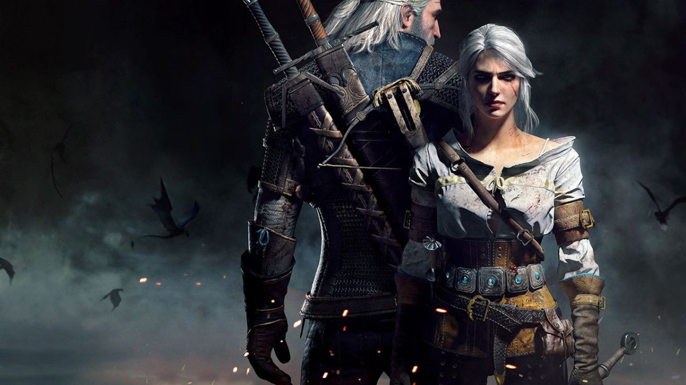
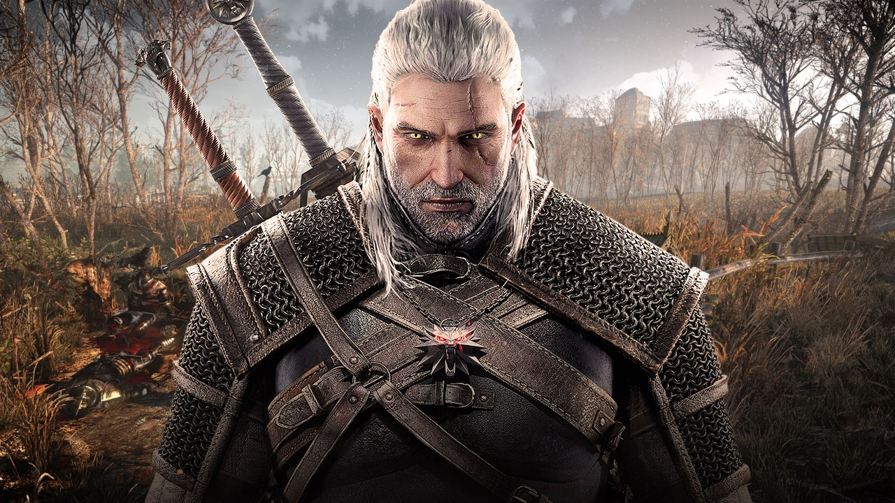

About The Witcher III
The Witcher universe is a perilous and endlessly interesting place. It is a world fraught with dangerous monsters and equally dangerous people. Its lore is deep and complex, with The Witcher III taking place in the 25th century. In this universe, humanity is fifteen centuries old, meaning it emerged around the 10th century.
When humanity first emerged, they were nothing but refugees and intruders to the 25 century old race of elves known as the Aen Seidhe. Their existence was a primal fight for survival in a harsh new environment. However, the last five centuries have seen the meteoric rise of humanity as a race and the conquest of most known lands, formerly ruled by elves, by humans.
The witchers, the game's namesake, are a mercenary caste of humans whose order came into existence perhaps 3 centuries ago. They were created through magical experimentation and controlled genetic mutations to embew them with magical power and strengthen them as humans as well. Witchers are trained from childhood and generally assigned to 1 of 4 schools. These are listed below:
- School of The Wolf
- School of The Viper
- School of The Griffin
- School of The Cat
The main purpose of the witcher caste is to be mercenary monster hunters who take money in exchange for hunting and killing dangerous monsters that are an existential threat to humans. Surprisingly, this role hasn't earned them much good will with normal humans. They are generally viewed with distrust and prejudice. This is mainly due to their superhuman magical and physical abilities. Each witcher has different abilities and capacities. Just some of these include but are not limited to: night vision, immunity to disease, and the ability to manually regulate blood and adrenaline flow along with the speed of their pulse. Witchers also age much more slowly than normal humans, contributing to their general mistrust through inevitable jealousy. This is only compounded further by their superhuman agility and strength.
